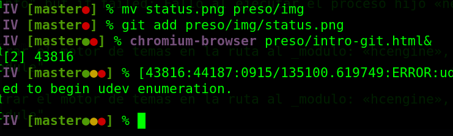

Introducción de git
Para infraestructura virtual/cloud computing
git es:Sistema distribuido de control de fuentes
Base de un sistema de gestión de flujos de trabajo
De lo primero se deduce que todo lo que no sea fuente (todo lo que esté generado) no debe estar en el repositorio. De lo segundo, que no sólo se trata de guardar fuentes, sino de iniciar una serie de tareas en el momento que se produzca una incorporación al sistema
Trabajaremos en repositorios == repo
... fuentes correspondientes a un solo proyecto
local mente (en nuestro ordenador)
remoto (en algún otro lugar)
que contienen diferentes ramas
que difieren en uno o más commits (o cambios).
Como es un sistema distribuido, local y remoto son simplemente ramas del mismo repositorio. Esas ramas se sincronizan, aunque parece parezca que se "sube" a un repositorio remoto
Cuenta en GitHub/GitLab
Se puede trabajar sin necesidad del cliente de git, sobre todo en los primeros objetivos. Más adelante será necesario, como es natural.
En GitHub/GitLab
Añade a GitHub todos tus emails
Configura tokens/info recuperación
Avatar
Adicionalmente, puedes crear tu perfil
de GitHub y/o tu sitio web
tunick.github/gitlab.io
Instala git localmente
Y gh, cliente línea de
órdenes de Github
Localmente
Configura email/nombre
Incluye info específica del repositorio
(si cuentas diferentes)
Crea el par público/privado
Sometimes you need to have specific
configurations for company repos, such as signed commits, or
use the company email for that. Hay que trabajar siempre con la conexión por ssh, nunca por https. Aparte de ser más segura, es más eficiente. Para eso hace falta la clave pública/privada
Tres preguntas al crear un repo
Nombre → crea README.md
Licencia
Lenguage → crea
.gitignore
Pruebas con un repositorio
git clone git@github.com:minick/reponame.git
touch zipi
git add zipi
git commit -am "Crea un fichero súper útil"
Siempre comprueba el status git statusUna precaución de seguridad, que te
permite saber exactamente dónde estás y qué estás haciendo.
Usa themes para la línea de órdenes

Como oh-my-zsh, oh-my-bash
La importancia de .gitignore
touch .env # Fichero con posible contenido sensible
git add . # NUNCA se debe hacer esto. NUNCA. 🙅🙅🙅⛔⛔⛔🚫🚫🚫
echo .env >> .gitignore # Ese fichero será ignorado por git add
git commit -am ":see_no_evil:"
# -a añade todos los que han cambiado
# m → mensaje en línea
# :see_no_evil: → 🙈Sincronizando
git pull --rebase # Siempre pull antes de push
git status # Siempre status antes de pull
git push # igual que git push origin master
Suficiente para una intro
Compra mi libro y todo eso.